¿Puede la escleroterapia con MicroespumaⓅ eliminar las grandes varices?
Sí, sin duda. Y disculpen si la rotundidad de la respuesta parece inmodestia, pero se trata de un hecho, como en el presente artículo pretendemos demostrar.
Sobre lo que es una variz hablamos ampliamente en otra de nuestras publicaciones, estableciendo que se trata de venas que pierden su facultad para conducir la sangre de forma centrípeta, esto es, desde los tejidos más distales hacia el corazón. En las extremidades inferiores, es evidente que dicho flujo es hacia arriba (en contra de la gravedad). Así, cuando se alteran las válvulas unidireccionales que lo facilitan, el reiterativo ascenso y descenso provoca el acumulo de la sangre en las partes más declives y un aumento de la presión en el vaso (hipertensión venosa distal). Ésta, que a la larga puede llegar a inducir una úlcera, conlleva que la pared se altere y su diámetro se dilate, pasando de ser inferior a unos 4 mm a llegar a los 10, 20 ó, incluso, 40mm.
Como también explicamos, y hasta finales del siglo XX, tales grosores hacían que la indicación terapéutica para estas varices fuera estrictamente quirúrgica, siendo inútiles los procedimientos escleroterápicos por su falta de efectividad y seguridad. Este paradigma cambió en 1994 gracias a la invención de la Microespuma℗ y de su técnica de aplicación ecoguiada por el Dr. Juan Cabrera Garrido, la cual demostró ser eficaz en la eliminación de varices de cualquier tipo y tamaño, úlceras varicosas, malformaciones vasculares, varicocele y hemorroides.
Pues bien, a continuación presentamos un par de ejemplos que respaldan esta afirmación:
Caso clínico 1
Se trata de una paciente de 57 años, hostelera de profesión, que acude a nuestra consulta refiriendo problemas a la deambulación y con un diagnóstico previo de artropatía degenerativa de rodilla izquierda, en tratamiento con antiinflamatorios e inyecciones de factores de crecimiento.
Durante la anamnesis se evidencia que las molestias en miembros inferiores no tienen características mecánicas sino más bien flebectásicas (dolor y edema que aumentan con la bipedestación y el calor).
A la inspección, se observan venas ingurgitadas que sugieren un cuadro de insuficiencia venosa crónica acompañado de edema con fóvea (+++) y lipodermatoesclerosis significativa, tal como se muestra en las imágenes (fig. 1 y 2).
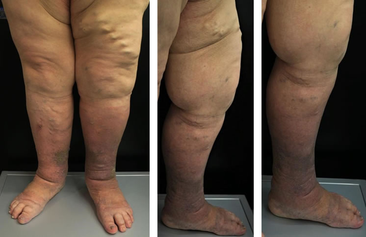
Figuras 1 y 2: miembro inferior izquierdo con marcada hipertensión venosa y afectación linfática, al inicio del tratamiento
La exploración mediante eco doppler color pone de manifiesto ambas venas safenas internas insuficientes y de gran diámetro en todo su recorrido, siendo superiores los de la izquierda, con marcas dilataciones a nivel de la unión safeno – femoral y tercio medio de muslo que presentan diámetros máximos de 28mm y 28.4mm, respectivamente (imágenes 3 y 4). Esto provoca hipertensión venosa intensa que es causa a la vez de edema, lipodermatoesclerosis y alto riesgo de ulceración.
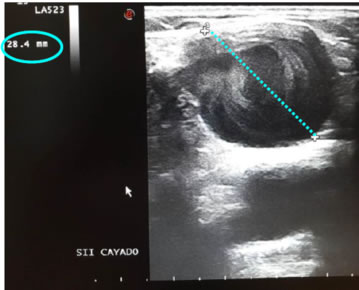
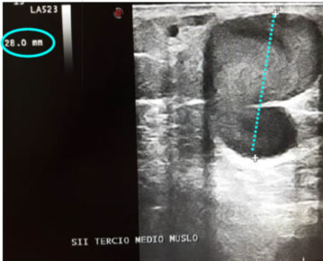
Figuras 3 y 4: Ecografía de unión safeno femoral izquierda y cavernoma en tercio medio de muslo.(Izq y dcha)
Dada la situación, decide comenzar el tratamiento de eliminación de sus varices mediante escleroterapia ecoguiada percutánea con Microespuma℗, con buena evolución fibrótica, tal como se evidencia en imágenes control 2 meses después (fig. 5 y 6), dándose una reducción en los mencionados diámetros a 18.7mm y 19.1mm.
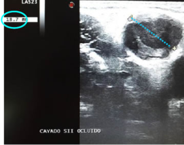
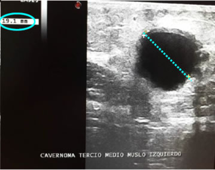
Figuras 5 y 6: evolución de diámetros a los 2 meses (izq. y dcha)
Al finalizar el tratamiento, se consigue la total erradicación ecográfica de las varices (fig. 7 y 8), con buenos resultados funcionales (desaparece la molestia a la deambulación), sobre el edema concomitante y estéticos (fig. 9 y 10)
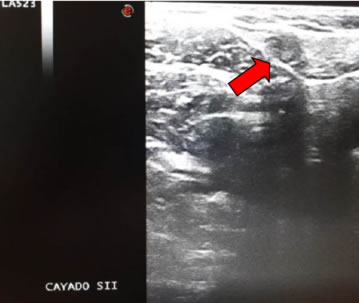
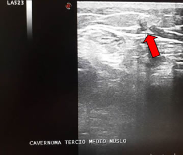
Figuras 7 y 8: resultado ecográfico al final del tratamiento. Las flechas señalan los restos de la variz eliminada
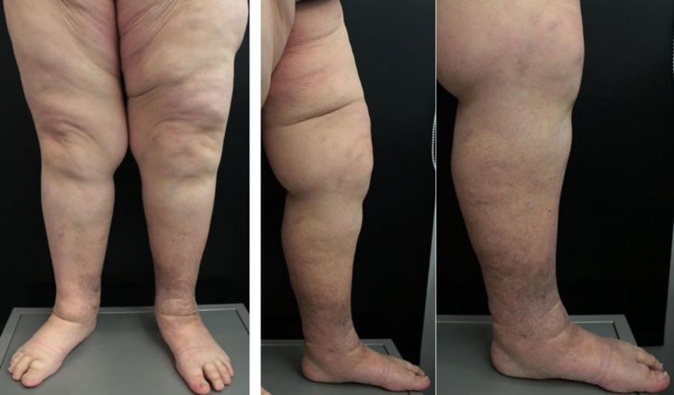
Figuras 9 y 10: Imágenes de los miembros al final del tratamiento
Caso clínico 2
Varón de 49 años, sanitario de profesión, con enfermedad varicosa de más de 20 años de evolución, a pesar de ser una persona delgada y que practica ejercicio habitualmente. Refiere molestias flebectásicas, sobre todo pesadez, que aumenta con la bipedestación y el calor, y que mejora con contención elástica (medias), las cuales emplea sobre todo cuando tiene guardias.
En la exploración ecográfica se observa insuficiencia de la vena safena anterior izquierda y de la safena interna derecha, con unión safeno – femoral muy dilatada (25 mm, figura 11), además de tributaria superficial gruesa y arrosariada (figuras 12, 13 y 14).
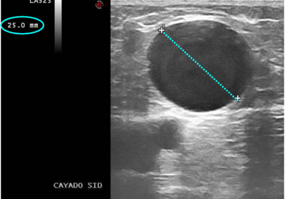
Figuras 11: Ecografía de unión safeno femoral derecha
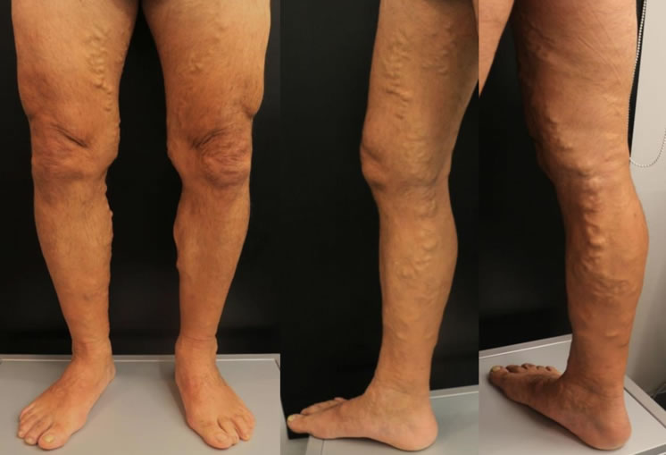
Figuras 12, 13 y 14: Imágenes de las varices en ambos MMII, con detalle de las tributarias del SID
El paciente, tras explicarle su patología, decide tratarse mediante nuestra técnica, consiguiendo una vez finalizado el tratamiento la completa eliminación de sus varices, tanto ecográficamente (figura 15) como a simple vista (fig. 16, 17 y 18)
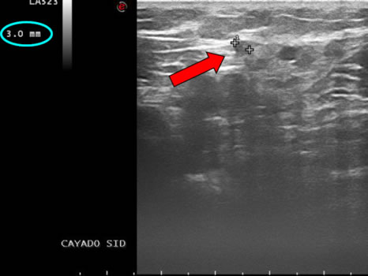
Figuras 15: Ecografía de unión safeno femoral derecha, evidenciando la eliminación de la variz. La flecha señala el resto de la variz
eliminada
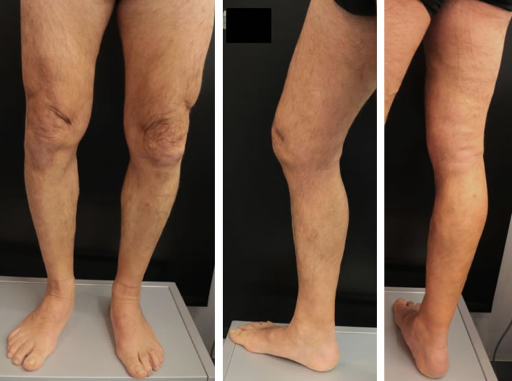
Figuras 16, 17 y 18: Resultado externo tras la eliminación de las varices
Conclusiones
Tal como atestiguan estos ejemplos, la escleroterapia ecoguiada con Microespuma℗ es una técnica efectiva para la eliminación de todo tipo de varices, de cualquier tamaño, forma y localización, en las que clásicamente el único recurso era la cirugía.
Dr. Gonzalo López
Especialista en flebología. Doctor en Ingeniería Tisular, especialidad en BiomaterialesClínica Dr. Juan Cabrera (A Coruña)
Productos Y Servicios
Si quieres conocer nuestra gama de productos más detalladamente y de manera cómoda aquí puedes ver todos nuestros productos
ver másContacta
¿Alguna duda acerca de nuestros productos o servicios? Aquí tienes todas las formas de contactar con nosotros
ver masTe Llamamos Gratis
Si tienes alguna pregunta sobre nuestros productos o servicios o necesitas consejos sobre algo relacionado con nuestro negocio, por favor déjanos un teléfono fijo o número de teléfono móvil y te llamamos gratis.
ver mas